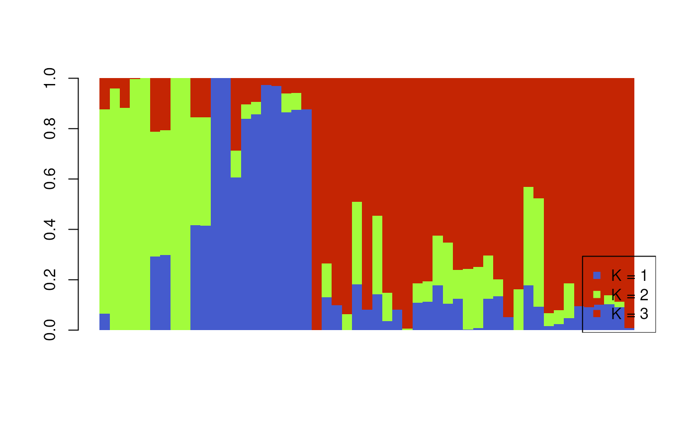
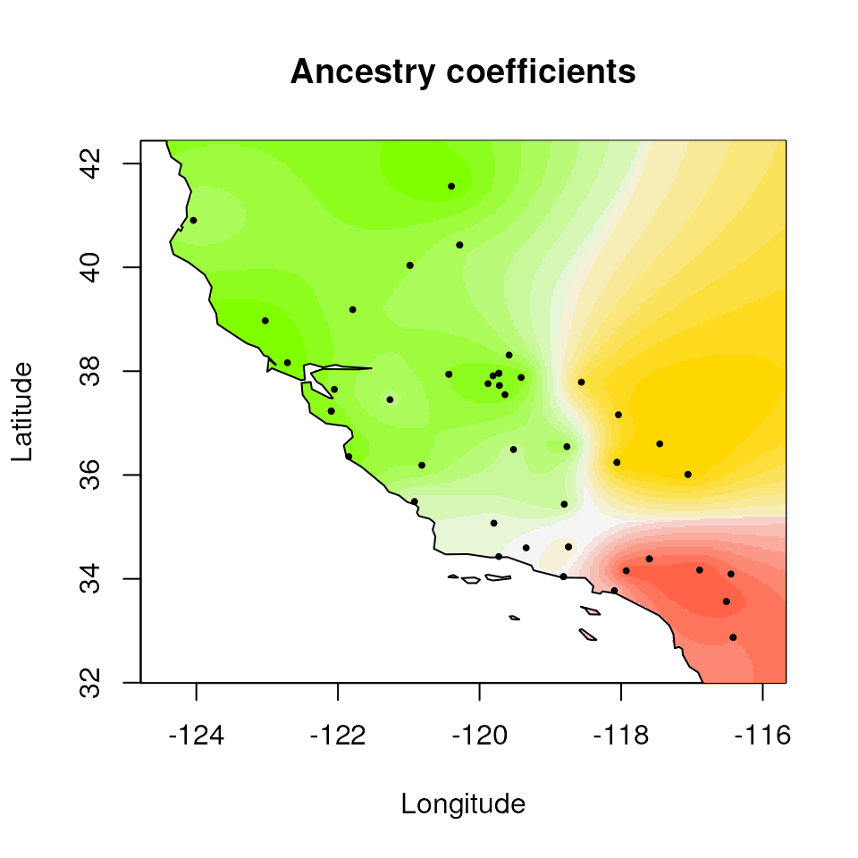

TESS
TESS_vignette.Rmd
# Install packages
tess_packages()TESS
library(algatr)
library(here)
library(wingen)
library(tess3r)
library(ggplot2)
library(terra)
library(raster)
library(fields)
library(rworldmap)
library(automap)
library(cowplot)
# for plotting (from TESS)
source("http://membres-timc.imag.fr/Olivier.Francois/Conversion.R")
source("http://membres-timc.imag.fr/Olivier.Francois/POPSutilities.R")
#> [1] "Loading fields"
#> [1] "Loading RColorBrewer"If using TESS, please cite the following: Caye K., Deist T.M., Martins H., Michel O., François O. (2016) TESS3: fast inference of spatial population structure and genome scans for selection. Molecular Ecology Resources 16(2):540-548. DOI: 10.1111/1755-0998.12471.
TESS is a method to estimate population structure using ancestry
coefficient estimates. As with STRUCTURE, one first describes genetic
variation by assigning individuals according to numbers of clusters (K
values). Given the “best” number of K values, individuals are then given
proportions to which they belong to each K. These proportions correspond
to ancestry coefficients, and can be interpreted as the proportion of an
individual’s ancestry belonging to different ancestral groups. Keep in
mind that you may want to prune out any SNPs that may be in linkage
disequilibrium prior to running TESS so as not to bias or overinflate
the significance of results. Please refer to the data processing
vignette for information on how this can be done in algatr using the
ld_prune() function.
Unlike STRUCTURE, TESS is spatially explicit, taking into account coordinate data; thus, ancestry coefficient estimates incorporate knowledge of the sampling space. TESS3 (Caye et al. 2016) was later developed as an extension of the TESS algorithm, with modifications to the underlying statistical clustering algorithm to increase computational speed.
For additional information on the original development and implementation of the algorithm used by TESS, see François et al. 2006 and Chen et al. 2007. Finally, our code primarily uses the tess3r package (see here for documentation).
Read in and process input data
Running TESS3 requires three data files: a genotype dosage matrix
(the gen argument), coordinates for samples (the
coords argument), and environmental layers (the
envlayers argument). We can use a vcf and the
vcf_to_dosage() function to convert a vcf to a dosage
matrix.
load_algatr_example()
#>
#> ---------------- example dataset ----------------
#>
#> Objects loaded:
#> *liz_vcf* vcfR object (1000 loci x 53 samples)
#> *liz_gendist* genetic distance matrix (Plink Distance)
#> *liz_coords* dataframe with x and y coordinates
#> *CA_env* RasterStack with PC environmental layers
#>
#> -------------------------------------------------
#>
#>
# Our code assumes that the first column is longitude and second is latitude; check this:
head(liz_coords)
#> x y
#> 1 -120.3972 41.56120
#> 3 -116.8923 34.16940
#> 5 -124.0408 40.90450
#> 7 -118.5614 37.78830
#> 8 -119.7194 37.72386
#> 9 -121.8467 36.35440
# Also, our code assumes that sample IDs from gendist and coords are the same order; be sure to check this before moving forward!
# Convert vcf to genotype matrix
liz_dosage <- vcf_to_dosage(liz_vcf)
#> Loading required namespace: adegenetProcess environmental data
algatr can create interpolated maps of the ancestry coefficient
estimates using a method known as kriging, which uses a spatially
explicit model for spatial interpolation. N.B.: Be aware that tess3r
uses a different type of kriging to generate maps of ancestry
coefficients (algatr uses the autoKrige() function within
the automap package), and tess3r performs this interpolation and
plotting in the same function, so there is no easy way to produce a
raster output.
To generate a map, we need a raster onto which we can map Q values.
We can either retrieve this, or generate one ourselves using wingen’s
coords_to_raster() function. Please refer to the wingen
documentation found here, and the
environmental data vignette, for further information on this
function.
# First, create a grid for kriging
# We can use one environmental layer (PC1), aggregated (i.e., increased cell size) to increase computational speed
krig_raster <- raster::aggregate(CA_env[[1]], fact = 6)
# If you want to see the difference between the non-aggregated (original) and aggregated rasters:
terra::plot(CA_env[[1]], col = mako(100), axes = FALSE)
K selection
algatr allows users with the option to test a range of K values using
the tess_ktest() function. K selection is often
accomplished by minimizing the cross entropy, but this can over-simplify
K selection. The tess_ktest() function allows users to
specify how K selection is done using the K_selection
argument; users can set the K values manually ("manual") or
using an automatic approach described below ("auto").
tess_ktest() runs TESS for each value of K within the
user-specified range, and outputs cross-validation scores for different
K values which allows a user to select the “best” K for their dataset.
Users have the option to select the algorithm with which TESS will be
run using the tess_method argument; options for the
argument are either projected least squares algorithm
("projected.ls"; the default) or an alternating quadratic
programming algorithm ("qp"). Finally, as mentioned at the
beginning of the vignette, TESS is spatially explicit meaning that it
can take into account the distance between samples. The degree to which
users suspect spatial autocorrelation between data points can be
controlled using the spatial regularization (alpha) parameter, specified
with the lambda argument. Values closer to 1 samples
geographically closer are also suspected to be more genetically similar
while values closer to 0 imply that there is little spatial
autocorrelation.
Manual K selection
The default K selection ("manual") within
tess_ktest() runs TESS on a set of K values ranging from
1-10, and allows the user to select the “best” K value manually based on
cross-validation scores. Typically, researchers will select the “best” K
value by minimizing cross-validation scores.
Automatic K selection
The other K selection method available is automatic K selection by
specifying "auto" within the tess_ktest()
function. This method is based on not only minimizing cross-entropy
scores (which is typically done), but minimizes the slope of the line
that connects cross-entropy scores between K values. In this way, the
best K is selected once an “elbow” is visible, or when cross-entropy
scores begin to plateau and the slope approaches 0. This function makes
use of the approach described here.
The resulting object contains tess3_obj, which provides
the cross-validation scores for the different K values that were tested.
Let’s do the automatic K-value testing procedure once again for K values
1-10. As you can see, the tess_ktest() function outputs a
plot with cross-validation scores for each K value, with a red dashed
line indicating the best K value obtained from the automatic K selection
procedure described above.
For this vignette, we’ll use automatic K selection.
# Best K is 3; this provides a more reasonable estimate for the "best" K compared to manual selection above
tess3_result <- tess_ktest(liz_dosage, liz_coords, Kvals = 1:10, ploidy = 2, K_selection = "auto")
#> == Computing spectral decomposition of graph laplacian matrix: done
#> ==Main loop with 1 threads: done
#> == Computing spectral decomposition of graph laplacian matrix: done
#> ==Main loop with 1 threads: done
#> == Computing spectral decomposition of graph laplacian matrix: done
#> ==Main loop with 1 threads: done
#> == Computing spectral decomposition of graph laplacian matrix: done
#> ==Main loop with 1 threads: done
#> == Computing spectral decomposition of graph laplacian matrix: done
#> ==Main loop with 1 threads: done
#> == Computing spectral decomposition of graph laplacian matrix: done
#> ==Main loop with 1 threads: done
#> == Computing spectral decomposition of graph laplacian matrix: done
#> ==Main loop with 1 threads: done
#> == Computing spectral decomposition of graph laplacian matrix: done
#> ==Main loop with 1 threads: done
#> == Computing spectral decomposition of graph laplacian matrix: done
#> ==Main loop with 1 threads: done
#> == Computing spectral decomposition of graph laplacian matrix: done
#> ==Main loop with 1 threads: done
K selection results from test_ktest()
The tess3_result object contains results for the
best-supported K value, including:
K: The value of the best-supported K (3, in this case)tess3_obj: Results from the cross-validation analysis of all values of Kcoords: Sampling coordinatesKvals: The range of K values that were testedgrid: The RasterLayer upon which ancestry coefficients are mapped;NULLin this casepops: Population assignments (determined based on the maximum Q value) for each individual for the best K value
Running TESS with no K selection
If you want to run TESS without any K selection, you could just run TESS as normal by doing the following:
tess3_obj_noK <- tess3(liz_dosage, coord = as.matrix(liz_coords), K = 3, method = "projected.ls", ploidy = 2)
#> == Computing spectral decomposition of graph laplacian matrix: done
#> ==Main loop with 1 threads: doneThe resulting object from the above run is a typical TESS output
format (it is also contained within the above tess3_obj
object); see tess3r vignette for details here
to read more.
Extracting TESS results
Now that we know which K value we want to use (K = 3) from our
automatic K selection results, we can move forward with TESS. We need to
extract the tess3 object from our results, and create a Q-matrix with
ancestry coefficient values from K = 3 using the qmatrix()
function with which we can visualize results.
# Get TESS object and best K from results
tess3_obj <- tess3_result$tess3_obj
bestK <- tess3_result[["K"]]
# Get Qmatrix with ancestry coefficients
qmat <- qmatrix(tess3_obj, K = bestK)
# qmat contains ancestry coefficient values for each individual (row) and each K value (column)
head(qmat)
#> [,1] [,2] [,3]
#> [1,] 9.999821e-01 8.946409e-06 8.946409e-06
#> [2,] 9.085585e-06 9.999818e-01 9.085585e-06
#> [3,] 7.212317e-01 1.298649e-01 1.489034e-01
#> [4,] 1.083884e-01 6.331817e-02 8.282934e-01
#> [5,] 8.999576e-01 1.000326e-01 9.841997e-06
#> [6,] 9.126593e-01 9.847514e-06 8.733083e-02Krige Q values
The tess_krig() function will take in ancestry
coefficient values (in the Q-matrix) and will krige the values based on
the raster provided (krig_raster from above). This will
produce a Raster* type object.
krig_admix <- tess_krig(qmat, liz_coords, krig_raster)Visualizing TESS results
Bar plot of Q values
A typical representation for population structure results is a STRUCTURE-style bar plot, in which each stacked bar represents an individual and the proportion of stacked color represents the proportion of ancestry assigned to that individual for each cluster (or K value). In our case, we have K=3, so there will be three colors representing each of these K values.
algatr has a custom function, tess_barplot(), to
generate these plots from our TESS results. This automatically sort
individuals based on their Q values (although this can be modified using
the sort_by_Q argument, if so desired); the outputted
“order” message indicates how individuals are ordered in the bar
plot.
tess_barplot(qmat)
#> $order
#> [1] 4 13 20 28 29 31 32 35 36 37 52 53 1 3 5 6 7 8 9 11 12 14 15 16 17
#> [26] 18 21 22 23 26 27 30 33 34 38 39 42 43 44 45 46 47 48 2 10 19 24 25 40 41
#> [51] 49 50 51We can also build bar plots using ggplot2 with the
tess_ggbarplot() function.
tess_ggbarplot(qmat, legend = FALSE)
Building maps in TESS3 using tess_ggplot()
Now let’s explore how Q values (ancestry coefficients) are mapped.
The tess_ggplot() function will take in the kriged
admixture values and sampling coordinates (if the user wants points
mapped), and provides several options for the plot method (with the
plot_method argument):
"maxQ"plots only the maximum Q value for each cell (this is the default)"allQ"plots all Q-values that are greater than a user-specifiedminQvalue"maxQ_poly"plots maxQ as polygons for each K-value instead of continuous Q values"allQ_poly"plots allQ as polygons for each K-value instead of continuous Q values
par(mfrow = c(2, 2), pty = "s", mar = rep(0, 4))
tess_ggplot(krig_admix, plot_method = "maxQ")
#> Warning: Using alpha for a discrete variable is not advised.
tess_ggplot(krig_admix, plot_method = "allQ", minQ = 0.20)
#> Warning: Using alpha for a discrete variable is not advised.
#> $plot
#>
#> $legend
#> Warning: Using alpha for a discrete variable is not advised.
tess_ggplot(krig_admix, plot_method = "maxQ_poly")
tess_ggplot(krig_admix, plot_method = "allQ_poly", minQ = 0.20)
Extended plotting
In many cases, a user may want more customizability in mapping their
TESS results. If users want more control over color, they can use the
ggplot_fill argument. Also, if users they want x and y axes
to be displayed, this can be set using the plot_axes
argument:
tess_ggplot(krig_admix, plot_method = "maxQ", ggplot_fill = scale_fill_manual(values = c("#bd9dac", "#257b94", "#476e9e")), plot_axes = TRUE)
We may also want to plot individual layers (K values), which we can
using tess_plot_allK().
par(mfrow = c(1, nlyr(krig_admix)), mar = rep(2, 4), oma = rep(1, 4))
tess_plot_allK(krig_admix, col_breaks = 20, legend.width = 2)
Plotting with default tess3r package functions
You can, of course, also plot TESS results using the tess3r package
defaults and not those provided with algatr. The TESS function for a
barplot is barplot().
barplot(qmat, sort.by.Q = TRUE, border = NA, space = 0, xlab = "Individuals", ylab = "Ancestry coefficients")
#> Use CreatePalette() to define color palettes.
#> $order
#> [1] 4 13 20 28 29 31 32 35 36 37 52 53 1 3 5 6 7 8 9 11 12 14 15 16 17
#> [26] 18 21 22 23 26 27 30 33 34 38 39 42 43 44 45 46 47 48 2 10 19 24 25 40 41
#> [51] 49 50 51You can also map kriged Q-values using tess3r with the
plot() function.
plot(qmat,
liz_coords,
method = "map.max",
interpol = FieldsKrigModel(10),
main = "Ancestry coefficients",
xlab = "Longitude", ylab = "Latitude",
col.palette = CreatePalette(),
resolution = c(300, 300), cex = .4
)
#> Warning:
#> Grid searches over lambda (nugget and sill variances) with minima at the endpoints:
#> (REML) Restricted maximum likelihood
#> minimum at right endpoint lambda = 0.003324997 (eff. df= 38.94999 )
#> Warning:
#> Grid searches over lambda (nugget and sill variances) with minima at the endpoints:
#> (REML) Restricted maximum likelihood
#> minimum at right endpoint lambda = 0.003324997 (eff. df= 38.94999 )
#> Warning:
#> Grid searches over lambda (nugget and sill variances) with minima at the endpoints:
#> (REML) Restricted maximum likelihood
#> minimum at right endpoint lambda = 0.003324997 (eff. df= 38.94999 )
As you can see from the above, interpolation is done using a different method in tess3r, which is why the resulting smoothed surface differs from than produced using algatr.
Running TESS with tess_do_everything()
The algatr package also has an option to run all of the above
functionality in a single function, tess_do_everything().
N.B.: the tess_do_everything() function does not
require a dosage matrix; it will do the conversion automatically if a
vcf is provided. Please be aware that the
do_everything() functions are meant to be exploratory. We
do not recommend their use for final analyses unless certain they are
properly parameterized.
The tess_do_everything() function will print out the
barplot, the cross-validation scores for the range of K values tested,
and the kriged map (if a grid is provided). It will also print the order
in which individuals are ordered in the barplot. The resulting object
from this function contains:
K: The best K value based on user-specified K selectionQmatrix: The matrix of individual ancestry coefficients, or Q valueskrig_admix: A RasterBrick object containing the kriged ancestry coefficient values for mapping; if no grid is provided, the function will skip krigingtess_results: The tess3r object containing cross-entropy scores for each K value testedcoords: Sampling coordinatesKvals: Range of K values that were testedgrid: The RasterLayer upon which Q values will be mapped
# One could also use krig_raster as the grid object
results <- tess_do_everything(liz_vcf, liz_coords, grid = CA_env[[1]], Kvals = 1:10, K_selection = "auto")
#> Please be aware: the do_everything functions are meant to be exploratory. We do not recommend their use for final analyses unless certain they are properly parameterized.
#> New names:
#> • `` -> `...1`


Additional documentation and citations
| Citation/URL | Details | |
|---|---|---|
| Main literature | Caye et al. 2016; vignette available here | Citation for TESS3 |
| Associated literature | François et al. 2006 | Details on algorithm used by TESS |
| Associated literature | Chen et al. 2007 | Details on algorithm used by TESS |
| Blog post | Automatic K selection | Details on automatic K selection used by algatr |